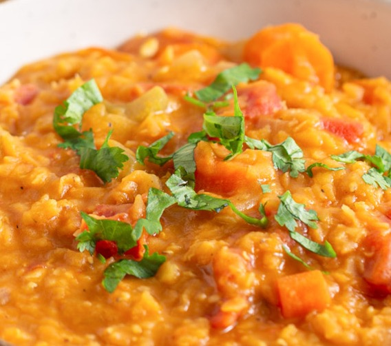

Red Lentil Stew

Description
This is a standard but delicious staple of the weekly dinner rotation. It is an easy one
to make and quick to clean up
Ingredients
- Half or 3/4 cup red lentils (thoroughly washed)
- Onion
- Garlic
- Grated Ginger
- Diced Tomato
- Grated Carrot
- Garam Masala
- Tumeric
- Salt
- Lime Juice
Instructions
- Cook the Lentils until soft and then drain and set asside
- Cook the onion, garlic and ginger in a pan with some oil until fragrant
- Add Carrots and continue cooking for a few minutes then add the diced tomato and the spices.
- Add lentils and mix thoroughly - simmer until ready and add lime juice and garnish with lime wedges
and chopped coriander leaves to taste.